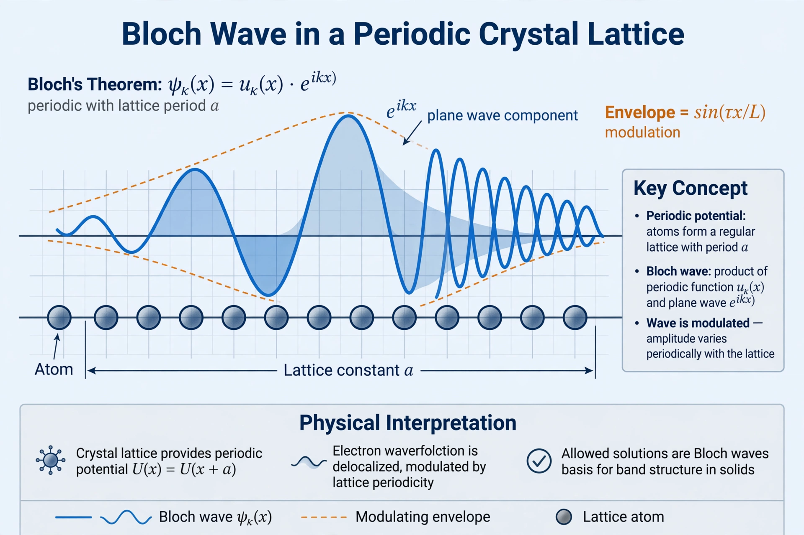

From Wikipedia, the free encyclopedia
| Bloch's theorem | |
|---|---|
 A Bloch wave in a periodic potential | |
| Field | Condensed matter physics |
| Named after | Felix Bloch |
| Published | 1929 |
Bloch's theorem is a foundational result in condensed matter physics, introduced by Felix Bloch in 1929. It states that the wave functions of an electron in a perfectly periodic potential — as in a crystalline solid — can be written as a plane wave multiplied by a function having the same periodicity as the lattice:
ψ(r) = e^(ik·r) · u(r), where u(r + R) = u(r) for every lattice vector R
Such functions are called Bloch functions or Bloch states. The wave vector k is a good quantum number (crystal momentum), and it suffices to consider k values within the first Brillouin zone.
Bloch's theorem underlies the electronic band structure of solids: for each band index, the energy E(k) forms continuous bands separated by forbidden gaps, which explain the classification of materials as conductors, semiconductors, and insulators. It also implies that electrons in a perfect lattice propagate without scattering from the lattice itself (resistance arises from defects and phonons).
Because the Hamiltonian commutes with lattice translation operators, its eigenstates can be chosen as simultaneous eigenstates of translations. A translation by a lattice vector R multiplies the wave function by a phase factor e^(ik·R), which directly yields the Bloch form.
The theorem is the starting point for nearly all calculations of electronic structure in solids, including tight-binding models and density functional theory for crystals, and generalises to any wave phenomenon in periodic media, such as photonic crystals.